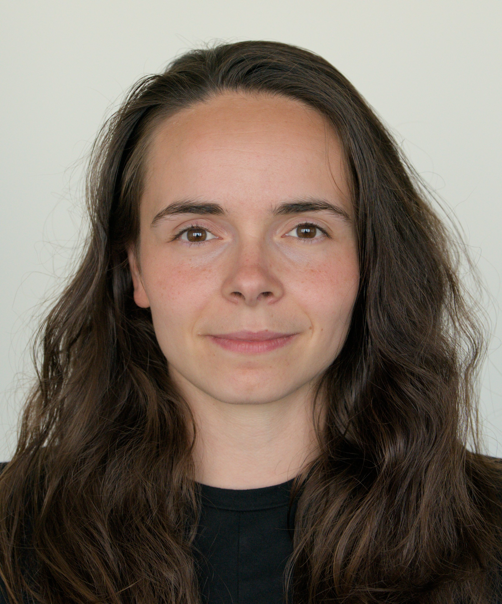

Loredana Piazza

Summary
I am an independent, responsible, and dedicated person who always carries
a smile on my face. With curiosity and interest, I am always eager to learn and contribute to a
constructive and harmonious collaboration.
- Flag football and fitness allow me to promote my physical health and endurance.
- Traveling and cultural events help me gain new perspectives and broaden my horizons.
Education
- 01/23 - 02/25 MSc Biomedical Engineering (ETH Zürich)
- Focus on biomechanis, medical imaging and data processing.
- Key Courses: Image Analysis and Computer Vision, Introduction to Machine
Learning, Computer Simulations of Sensory Systems.
- 2019-2023 BSc Health Sciences and Technology (ETH Zürich)
- 2015-2019 Matura - Focus on biology and chemistry (Kantonsschule Wohlen)
Work Experience
- 08/24 - 02/25 Master Thesis (ETH Zürich, Dept. of Materials, Prof. Spolenak)
Additive Manufacturing of Nanoporous Ag for SERS. 3D printing of
nanoporous Ag and analysis of structures using Raman spectroscopy, SEM
and FIB.
- 09/24 - 01/25 Head Teaching Assistant (ETH Zürich, Dept. HEST, Prof. Zenobi-Wong)
Coordination & organization of exercise material and sessions for "Materials and Mechanics in
Medicine".
- 09/24 - 01/25 Teaching Assistant (ETH Zürich, Dept. Informatik, Dr. Fässler & Dr. Dahinden)
Supervision of students in the course ”Grundlagen der Informatik” for coding
tasks with Python and SQL.
- 09/23 - 05/24 Internship Manufacturing Engineering (Biotronik AG)
R&D Internship in the area of cardiovascular intervention. I co-developed a
physical model for testing of ballon catheters.
Skills
Python (Medical Imaging,
Data Visualization,
Machine Learning, Signal
Processing, numpy,
pytorch, matplotlib,
seaborn), SQL,
MS-Office, R, C#, Matlab
Other